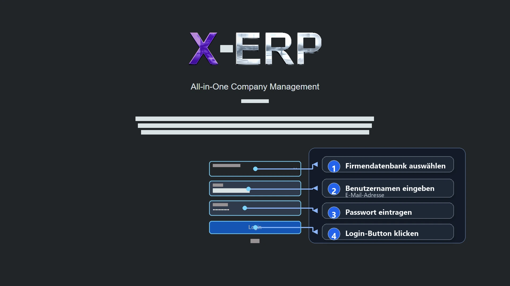

ERP Hilfe
Login
Einordnung
X-ERP Hilfe > Grundlagen > Login
Klicken Sie auf den Link, den Ihnen Ihr Administrator oder Fachhändler bereitgestellt hat. Wählen Sie anschließend die Ihnen zugewiesene Firmendatenbank aus und melden Sie sich mit Ihrem Benutzernamen und Passwort an.

Anmeldung Schritt für Schritt
- Firmendatenbank auswählen.
- Benutzernamen eingeben. Der Benutzername ist in der Regel Ihre E-Mail-Adresse.
- Passwort eintragen.
- Login-Button klicken.
Falls erforderlich, werden Sie beim ersten Anmelden aufgefordert, Ihr Passwort zu ändern.